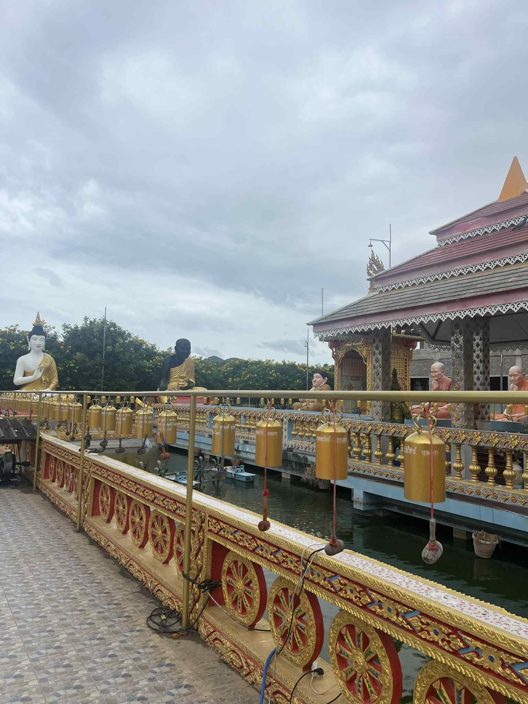
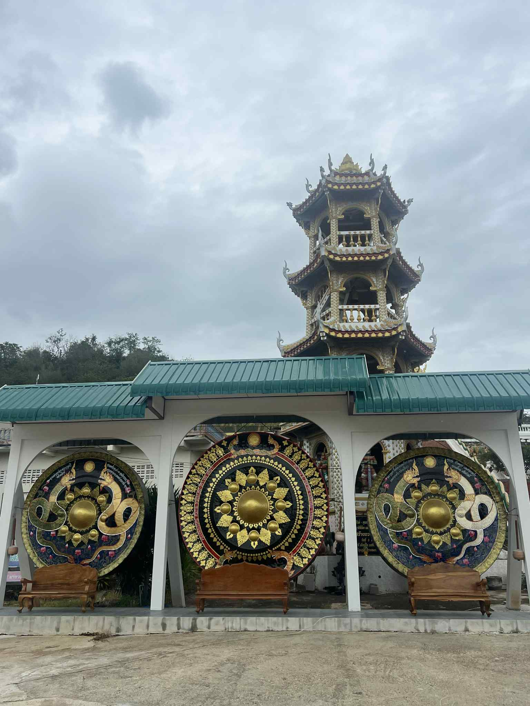

สิ่งศักดิ์สิทธิ์และสถาปัตยกรรมที่ไม่ควรพลาด

สะพานมงคลตีระฆัง
ทางเดินประดับด้วยระฆังทองคำจำนวนมาก ผู้มาเยือนนิยมมาตีเพื่อเสริมความเป็นสิริมงคลในชีวิต

ลานพุทธบูชา
สักการะหมู่พระพุทธรูปปางต่างๆ ท่ามกลางองค์พญานาคและรูปปั้นยักษ์ (ท้าวเวสสุวรรณ) ที่เชื่อกันว่าช่วยคุ้มครอง

ฆ้องยักษ์และเจดีย์ทรงปราสาท
สักการะฆ้องขนาดใหญ่สามใบพร้อมชมสถาปัตยกรรมเจดีย์ทรงปราสาทที่ตั้งอยู่บนเนินเขา